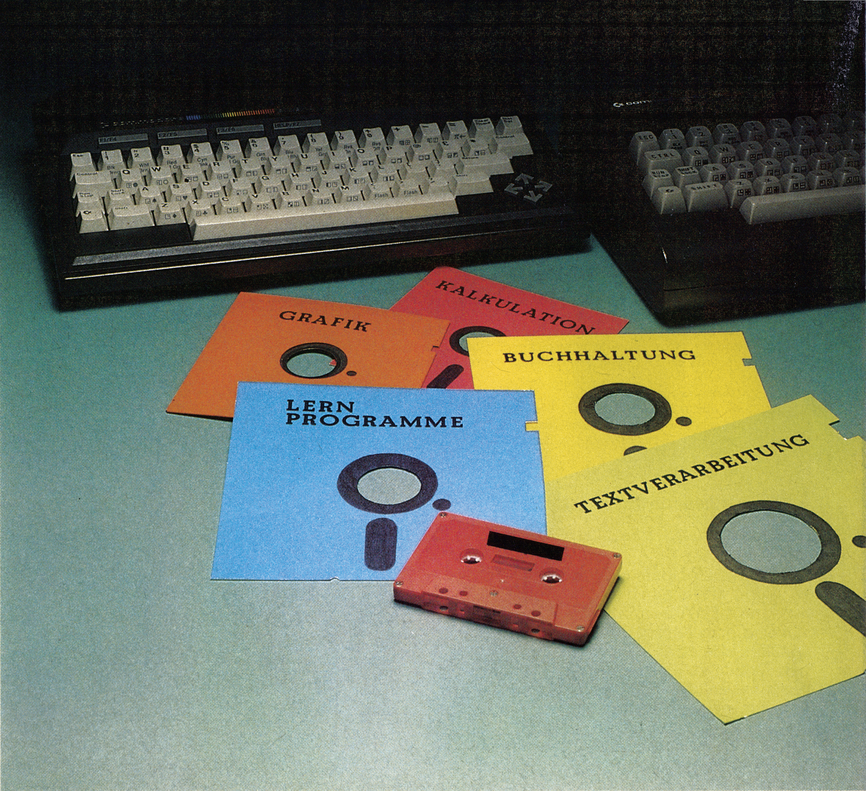
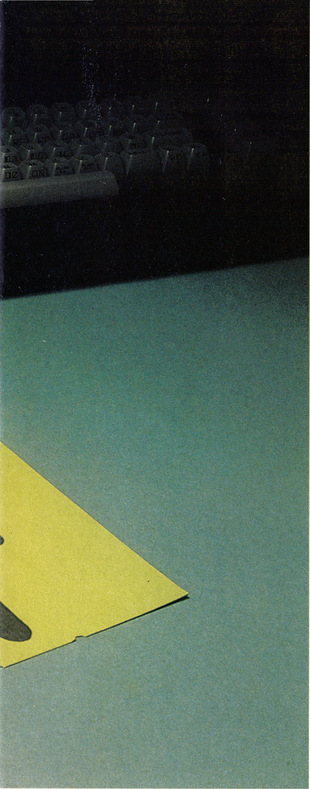

Anwendungs-Software für C 116, C 16 und Plus/4
Der Erfolg eines Computers ist stark von Umfang und Qualität der für ihn angebotenen Software abhängig. Wir haben uns auf dem Markt umgesehen und sagen Ihnen, was es an Anwendungs-Software gibt.


Irgendwann kommt der Punkt, an dem man seinen Computer nicht nur zum Spielen, sondern auch einmal »sinnvoll« einsetzen möchte. Bei unseren Nachforschungen über Anwendungs-Software hat sich ergeben, daß es für den C 16 und den Plus/4 mindestens zehnmal soviel Spiele wie sinnvolle Software gibt. Es scheint so, daß preiswerte Computer vor allem zum Spielen eingesetzt werden.
Eigentlich ist dies eine traurige Entwicklung, da man sehr häufig als Kaufargument »ich möchte den Anschluß an die Zukunft nicht verlieren« hört. Doch mit Spielen wird man diesem Vorsatz sicherlich nicht voll gerecht. Durch Spiele verliert man höchstens die Scheu vor der »Wundermaschine Computer«.
Der gekonnte Umgang mit einer Textverarbeitung hingegen dürfte für die meisten Berufe von Vorteil sein, da sich Textverarbeitungssysteme auf Bürocomputern nicht wesentlich von denen für Heimcomputer unterscheiden. Außerdem läßt sich eine Textverarbeitung auch zu Hause durchaus sinnvoll einsetzen. Zum Beispiel sieht ein Brief an eine Behörde oder Firma wesentlich ansprechender aus, wenn er sauber (und ohne Tipp-Ex) mit einem Drucker angefertigt wurde.
Die zweite Gruppe der meistgekauften Anwendungsprogramme sind die Dateiverwaltungen. Damit lassen sich Daten jeder beliebigen Art verwalten, das heißt sortieren, ausdrucken und nach bestimmten Kriterien durchsuchen. Diese Dateiverwaltungen sind meist so flexibel, daß sie für jede Anwendung angepaßt werden können. Sie können zum Beispiel mit demselben Programm Telefonnummern, Ihre Schallplattensammlung oder verschiedene Kochrezepte verwalten.
In unserem nächsten C 16-Sonderheft werden wir die gängigsten Textverarbeitungen und Dateiverwaltungen für den C 16 einem Vergleichstest unterziehen.
| Anwendungszweck | Name des Programms | Bezugsquelle | Datenträger | Für | Preis |
|---|---|---|---|---|---|
| Adressenverwaltung | Adress C 16 | E | K | alle | 29,90 |
| Assembler | noch offen | D | D/K | alle | 59,—/49,— |
| Basic-Compiler | Austrospeed +4 | C | D | +4 | 129,— |
| Befehlserweiterung | Turbo+ | B | M | alle | 49,— |
| Befehlserweiterung | Utility C 16 | E | K | alle | 29,90 |
| Zeichensatz deutsch | noch offen | B | M | alle | 39,— |
| Dateiverwaltung | Datei C 16 | E | K | alle | 29,90 |
| Dateiverwaltung | Dateimanager | A | D/K | alle | 29,90 |
| Dateiverwaltung | MicroDatei | B | D/K | alle | 29,— |
| Lernprogramm | Vokabel C 16 | E | K | alle | 29,90 |
| Malprogramm | Paintbox | B | D/K | alle | 25,— |
| Musikprogramm | Musicmaster | B | D/K | alle | 29,— |
| Tabellenkalkulation | Calc/Plus | D | M | alle | 39,— |
| Tabellenkalkulation | MicroCalc | B | D/K | alle | 29,— |
| Textverarbeitung | MicroText | B | D/K | alle | 29,— |
| Textverarbeitung | Script/Plus | D | M | alle | 39,— |
| Textverarbeitung | Text C 16 | E | K | alle | 29,90 |
| Textverarbeitung | Textmanager | A | D/K | alle | 29,90 |
| Turbotape | CSJ-Turbotape | E | K | alle | 29,90 |
| Turbotape | Turbotape | B | K | alle | 19,— |
| Zeichensatzeditor | Grafikdesigner | B | D/K | alle | 19,— |
| (Alle Angaben sind Herstellerangaben. Änderungen vorbehalten) | |||||
Nun noch ein paar Informationen zu den Bezeichnungen in der Übersicht:
— »Bezugsquelle«: Die Adressen, bei denen Sie das jeweilige Programm kaufen können, finden Sie unter der Tabelle ganz rechts oben.
— »Datenträger«: Hier erfahren Sie, auf welchem Datenträger das Programm geliefert wird. Bei Programm-Kassetten ist zum Teil mit erheblichen Wartezeiten beim Laden zu rechnen. Es bedeuten K = Kassette, D = Diskette und M = Programm-Modul.
— »Für«: Außer dem Programm »Austrospeed + « sind alle Programme sowohl auf dem C 16, als auch auf dem C 116 und dem Plus/4 ablauffähig. Da der Austrospeed-Compiler ein kleines Steckmodul als Kopierschutz im User-Port verwendet, ist er auch nur auf dem Plus/4 und nicht auf einem erweiterten C 16 zu verwenden. Dieser und der C 116 haben nämlich keinen User-Port. Auch bei einem nachträglich mit einem User-Port versehenen C 16 kann es Probleme geben.
— »Preis«: Die angegebenen Preise können je nach Verkaufserfolg des Programms stark schwanken. Bei Angaben in der Form »Preis/ Preis« gelten die Daten für die Disketten-/Kassettenversion.
(tr)